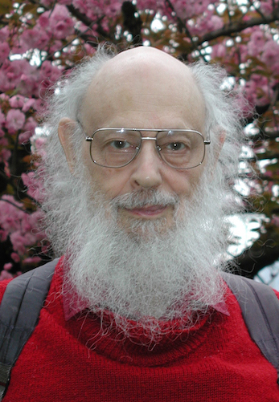
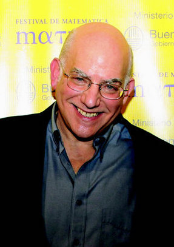
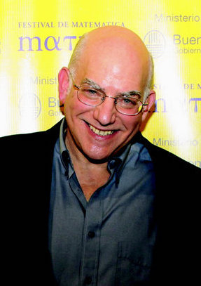
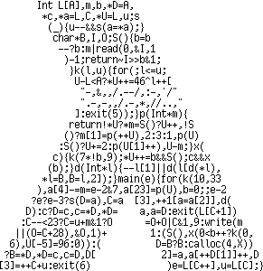

John Tromp
01101000100000001000000000000000100000000000000000000000000000001000000000000000000000000000000000000000000000000000000000000000100000000000000000000000000000000000000000000000000000000000000000000000000000000000000000000000000000000000000000000000000000001000000000000000000000000000000000000000000000000000000000000000000000000000000000000000000000000000000000000000000000000000000000000000000000000000000000000000000000000000000000000000000000000000000000000000000000000000000000000000000000000000000000000000
01101001100101101001011001101001100101100110100101101001100101101001011001101001011010011001011001101001100101101001011001101001100101100110100101101001100101100110100110010110100101100110100101101001100101101001011001101001100101100110100101101001100101101001011001101001011010011001011001101001100101101001011001101001011010011001011010010110011010011001011001101001011010011001011001101001100101101001011001101001100101100110100101101001100101101001011001101001011010011001011001101001100101101001011001101001
01101110010111011110001001101010111100110111101111100001000110010100111010010101101101011111000110011101011011111001110111110111111000001000011000101000111001001001011001101001111010001010011010101010111011001011011011101011111100001100011100101100111101001101011101101101111110001110011110101110111111001111011111101111111000000100000110000101000011100010010001011000110100011110010001001001100101010010111001100100110110011101001111101000010100011010010101001110101001010101101011010101111011000101100110110101
11001001000011111101101010100010001000010110100011000010001101001100010011000110011000101000101110000000110111000001110011010001001010010000001001001110000010001000101001100111110011000111010000000010000010111011111010100110001110110001001110011011001000100101000101001010000010000111100110001110001101000000010011011101111011111001010100011001101100111100110100111010010000110001101100110000001010110000101001101101111100100101111100010100001101110100111111100001001101010110110101101101010100011100001001000101The 512 bit lengths avoid mistakes made by articles such as this that claim
To illustrate, a sequence such as 00000000000000000000000000000000000000000000000000000000000000000000000000000000 can be described by a computer program much shorter than itself, namely: print 80 zeros
Just how much shorter? 14 bytes = 112 bits (or 98 bits of 7-bit ASCII).
We must avoid such bit vs byte confusion. Not engrave them in gold...

 

November 1960 "A preliminary report on a general theory of inductive inference"
Technical Report ZTB-138, Zator Company, Cambridge, Massachusetts
Andrey N. Kolmogorov (25 Apr 1903 – 20 Oct 1987)
1965 "Three approaches to the definition of the quantity of information"
Problems of Information Transmission (1): 3–11.
1966 "On the Length of Programs for Computing Finite Binary Sequences"
Journal of the Association for Computing Machinery. 13 (4): 547–569.
KM(x) = min {|p|: M(p) = x}
Objects can be binary strings, or natural numbers in a 1-1 correspondence:
0 1 2 3 4 5 6 7 8 9 10 11 ... | | | | | | | | | | | | "" 0 1 00 01 10 11 000 001 010 011 100 ...(bitstring n is n+1 written in binary without its leading 1)
So we can take the length of a number, and consider that length as a binary string.
How do we avoid the description method parameter?
KU(x) ≤ KM(x) + O(1)
Invariance Theorem There is a universal description method U. Define K(x) = KU(x)
Theorem K(x) is uncomputable
Theorem For strings of length n, K(x) ≤ n + O(1)
Theorem Fraction of { |x|= n, K(x) < n - c } is less than 2-c
Chaitin's Incompleteness Theorem It's impossible to prove in general that a program p is elegant, i.e. of minimal length.
What to make of K(<x,y>) ≤ K(x) + K(y) + ???
How to define a random infinite string x in terms of complexity of its prefixes x1..n?
How to define an algorithmic probability P(x) ?
Restrict programs to a prefix-free set, i.e. when p and q are different programs, then neither is a prefix of the other.
Define a universal prefix machine UP and corresponding complexity KP(x).
Call x random if KP(x) ≥ |x|.
Chaitin has a rather strong view on plain complexity:
"Anyway, in my opinion AIT really begins with my 1975 ACM Journal paper ``A theory of program size formally identical to information theory;'' the rest was the pre-history of the field!" Think of a computer as decoding equipment at the receiving end of a noiseless binary communications channel. Think of its programs as code words, and of the result of the computation as the decoded message. Then it is natural to require that the programs/code words form what is called a “prefix-free set,” so that successive messages sent across the channel (e.g. subroutines) can be separated.
KP(<x,y>) = KP(y) + KP(x|y*) + O(1)
KP(x) = KP(n) + KP(x|n*) + O(1), with n = |x|
An infinite binary string x is random if all but finitely many of its prefixes x1..n are.
With probability 1, a randomly chosen infinite binary string is random.
This definition is equivalent to one by Per Martin-Löf from 1966 in terms of so-called constructive null-sets.
Define P(x) as the probability that the universal prefix machine outputs x.
Then P(x) = Θ(2-KP(x))
So algorithmic probability is concentrated on the shortest program.
What is Ω = ∑x P(x) ?
Ω is the halting probability of UP on a random input. Ω is enumerable / semi-computable.
Theorem Ω is random
Many mathematical questions can (in theory) be settled by knowledge of the first few thousand bits of Ω.
Sketch: Ω1..n, dovetail all programs contributing to Ω until their sum contribution exceeds Ω1..n. At that point all unfinished programs up to length n are known not to halt.
Chaitin showed that proving the value of any k bits of Ω requires a formal theory of complexity at least k+O(1).
Goals for universal machine
DMTCS’96 Proceedings, Springer Verlag, Singapore, 1997, pp. 1–23,
Gregory Chaitin paraphrases John McCarthy about his invention of LISP, as "This is a better universal Turing machine. Let’s do recursive function theory that way!" Chaitin continues:
And the funny thing is that nobody except me has really I think taken that seriously. And the reason of course is that theoreticians didn't really much care about programming, about really playing with the computer. So the thing I've added is I think nowadays you have no excuse! If a theory has to do with the size of computer programs, you want to damn well see the programs, you want to be able to run them, it ought to be a programming language that is easy to use.
So I’ve done that using LISP because LISP is simple enough, LISP is in the intersection between theoretical and practical programming. Lambda calculus is even simpler and more elegant than LISP, but it’s unusable. Pure lambda calculus with combinators S and K, 11 it’s beautifully elegant, but you can’t really run programs that way, they’re too slow.
Turns out, neither is too slow to run programs. And while SK combinators are slightly simpler than lambda calculus, the latter is significantly more expressive, bit-for-bit. So that's what we're going with.
Functional bits
Unlike LISP, neither cons nor car/cdr/nil/null are primitives
bool foo bar
if not null L then foo (car L) (cdr L) else barwe can write
L (λh λt λ_. foo h t) barOr if L is known to be non-empty, simply
L foo
cons b0 (cons b1 (cons ... (cons bn-1 T)...)A Lambda machine is a lambda calculus term M applied to a binary input stream that may or may not be terminated. The normalized result of this application is the output of the machine.
Example with identity machine ID = λx. x and input string 10
(λx. x) (cons 1 (cons 0 nil)) ->* cons 1 (cons 0 nil)showing ID (10:T) = (10:T). What does this say about KID(10) ?
We'd now like to do the inverse: translate a lambda term M into a bitstring code(M). Then a Universal machine can operate as
U(code(M) : T} = M(T)
We thus need to encode
λx λy λz. z x yis written
λ λ λ . 1 3 2in De Bruijn notation (also known for his De Bruijn sequences).
λ λ λ @ @ 1 3 2Now encode
λ as 00
@ as 01
n as 1n0
For example, code(λxλyλz. z x y) =
code(λ λ λ @ @ 1 3 2) =00 00 00 01 01 10 1110 110
E = (λ 1 1) (λ λ λ 1 (λ λ λ λ 3 (λ 5 (3 (λ 2 (3 (λ λ 3 (λ 1 2 3))) (4 (λ 4 (λ 3 1 (2 1)))))) (1 (2 (λ 1 2)) (λ 4 (λ 4 (λ 2 (1 4))) 5)))) (3 3) 2)
satisfying, for all closed terms M:
E C (code(M) : N) = C (λz. M) N
code(E) is 206 bits long !
For non-closed terms M, the result depends on what's passed in as z. We can pass in a term loop = (λx. x x)(λx. x x) to make the interpreter diverge in that case.
U = E (λz.z loop)satisfies
U(code(M) : T) = M(T)
code(U) =
0101 00 01 1010 000000 010101 10 000
00000 01 1110 00 0101 111110 01 1110
00 0101 110 01 1110 0000 01 1110 00 01
01 101101110 01 11110 00 01 11110 00
0101 111010 01 11010 0101 10 01 110 0
0 01 10110 00 0101 11110 00 01 11110 0
0 01 110 01 1011110111110 01 111011
10110 00 01 10 01 00 01 1010 00 01 1010
token λ @ 1 2 3 4 5 6+ freq 22 35 14 7 8 5 2 0 codeU features the above code frequencies. The code lengths closely approximate an optimal Huffman code. A high indexed variable used several times within a local scope00 01 10 110 1110 11110 111110 111111*
λv. λ λ λ λ λ λ λ ( ... v ... v ...)can instead be re-bound with a single occurence to reduce code length:
λv. λ λ λ λ λ λ λ ((λv' ... v' ... v' ...) v)
K(x|y1, . . . , yk) = min{|p| | U (p : nil) y1 . . . yk = x}
KP(x|y1, . . . , yk) = min{|p| | U (p : T) y1 . . . yk = cons x T}
Through our standard encodings, we also obtain complexities of binary strings, pairs, tuple, lists, etc.
E.g. for binary string s, K(s) = K(s : nil).
Note that programs consist of two parts: an encoded lambda term, and the bits that it "reads".
Programs terminated by nil are delimited while those with an unread tail T are self-delimiting. The latter by necessity form a prefix-free set.
BLC is the language of programs for the universal machine U. The simplest BLC programs are those starting with code(λx.x) = 0010 that prove
Theorem For strings x of length n, K(x) ≤ n + 4
What would be a good upperbound for KP(x) for strings x of length n?
Recall that KP(x) = KP(n) + KP(x|n*) + O(1) ≤ KP(n) + n + O(1)
0 1 2 3 4 5 6 7 8 9 10 11 ... | | | | | | | | | | | | "" 0 1 00 01 10 11 000 001 010 011 100 ...Another way to relate them is in a tree...
Number String Delimited 0 0 1 0 10 2 1 110 0 3 00 110 1 4 01 1110 0 00 5 10 1110 0 01 6 11 1110 0 10 7 000 1110 0 11 8 001 1110 1 000 9 010 1110 1 001 127 0000000 11110 0 10 111111
where 340 is the size of Levenshtein decoder
(λ 1 1) (λ λ λ 1 (λ 1 (3 (λ λ 1)) (4 4 (λ 1 (λ λ λ 1 (λ 4 (λ λ 5 2 (5 2 (3 1 (2 1)))))) 4 (λ 1))))) (λ λ λ 1 (3 ((λ 1 1) (λ λ λ λ 1 (λ 5 5 (λ λ 3 5 6 (λ 1 (λ λ 6 1 2) 3)) (λ λ 5 (λ 1 4 3))) (3 1)) (λ λ 1 (λ λ 2) 2) (λ 1)) (λ λ 1)) 2)
Most of that code is for converting from Church numeral back to bitstring. Leaving that part out, we get:
We can do even better for Church numerals: KP(Churchn) ≤ |code(n)| + 139 Theorem KP(Church numeral n) ≤ |code(n)| + 139
Theorem KP(PRIMES) ≤ 167
where (prime number) 167 is the size of the prime number sieve
(λ 1 1) (λ λ λ 1 (λ 1 (3 (λ λ 1)) (4 4 (λ 1 (λ λ λ 1 (λ 4 (λ λ 5 2 (5 2 (3 1 (2 1)))))) 4 (λ 1))))) (λ λ λ 1 (3 ((λ 1 1) (λ λ 1 (λ λ λ 3 (λ 1 (λ λ 1) 3) (λ 1 (λ λ 2) (6 6 3))) (λ 1 (λ λ 2) 2))) (λ λ 1) ((λ 1 1) (λ λ λ λ 2 (4 4) (λ 1 4 2))) (λ λ 1)) 2)
Clearly, BLC is more of a compile target than a source code language.
The only nontrivial programs I hand-coded in BLC are the self interpreter and an SK interpreter.
\io.let B0 = \x0\x1. x0; -- bit 0 B1 = \x0\x1. x1; -- bit 1 cons = \x\y\z.z x y; cons0 = \y\z.z B0 y; Y = \f. (\x. x x) (\x. f (x x)); -- Sieving numerals Sn = Ssucc^n S0 S0 = \cont\x\xs. cons0 (xs cont); Ssucc = \Sn\c\x\xs. cons x (xs (Sn c)); -- (x:xs) (Ssucc Sn cont) = Ssucc Sn cont x xs = x : xs (Sn cont) -- (list (Y Sn)) sets every (n+1)'th element of list to B0 -- (11111111111111111111:T) (Y S0) = (00000000000000000000:T') -- (11111111111111111111:T) (Y S1) = (10101010101010101010:T') -- (11111111111111111111:T) (Y S2) = (11011011011011011011:T') sieve = \Sn. cons B1 (let Ssn = Ssucc Sn in (sieve Ssn) (Y Sn)) in cons0 (cons0 (sieve S0))
$ ./blc help Usage: blc action progfile [args]... run run given program applied to standard input bits and args run8 run given program applied to standard input bytes and args print show program nf show normal form hnf show head normal form nf_size show size of normal form comb_nf normal form through SK reduction comb show translation to combinatory logic bcw encode in BCW combinators bcl encode in binary combinatory logic diagram show ascii diagram Diagram show alternative ascii diagram boxchar show boxdrawing character diagram Boxchar show boxdrawing character alternative diagram pbm show diagram in portable bitmap format Pbm show alternative diagram in portable bitmap format tex show program as TeX html show program as html printlc show lambda calculus program with de Bruijn indices blc encode as binary lambda calculus bits Blc encode as Binary lambda calculus bytes size show size in bits help show this text
$ ../blc blc primes.lam 00010001100110010100011010000000010110000010010001010111110111101001000110100001110011010000000000101101110011100111111101111000000001111100110111000000101100000110110$Checking code size
$ ../blc size primes.lam 167Running the prime sieve
$ ../blc run primes.lam | head -c 64 0011010100010100010100010000010100000100010100010000010000010100$
$ ../blc Boxchar primes.lam ───────────────────────────────────────────────── ┬─┬───────────────────────────────────┬──── ────┬ │ │ ┬─┬ ────┬─┬────────────────────── ┼───┬ ┬───┼ │ │ └─┤ ────┼─┼───────────────────┬── ┼───┼ │ ┬ │ │ │ │ ┬───┼─┼───────────────────┼── ┼─┬─┼ │ ┼ │ │ │ │ │ ─ ┼─┼─┬─────┬──── ──────┼─┬ │ ├─┘ └─┤ │ │ │ │ │ ┬ └─┤ │ ┬─┬ ┼─┬─┬ ──┬───┼─┼ ├─┘ ├─┘ │ │ │ └─┤ └─┤ └─┤ │ ├─┘ ──┼─┬─┼─┼ │ │ │ │ │ │ │ │ ├─┘ ┬─┼─┼─┼─┼ │ │ │ │ │ │ │ ├─┘ └─┤ │ ├─┘ │ │ │ │ │ │ └───┤ │ ├─┘ │ │ │ │ │ │ │ ├─┘ │ │ │ │ │ │ ├─────────┘ │ │ │ │ │ ├─────────┘ │ │ │ │ └───┤ │ │ │ │ ├───────────────────────────┘ │ │ ├───────┘ │ └─┤ │ └───────────────────────────────────────────┘produces nice diagrams
(λ 1 (λ λ 2) (λ 1 (λ λ 1)) (λ λ λ (λ 1 (3 2) (λ λ 3 1 (6 1 1 (4 ((λ 1 1) (λ λ λ λ λ 1 2 (λ 1 (λ λ 1) (λ λ λ 8 2) (λ λ 1) (4 (6 6) (λ 4 (λ 1 7 2)))))) 5) (λ λ 1) (λ λ λ λ 1) (λ λ 2) (λ λ 1)) (λ λ λ 1 (λ 1 6 4) 2))) (4 (λ 1) (λ 1) (λ 1) 1)) (λ 1)) (λ λ (λ 1 1) (λ λ λ λ 1 (λ (λ λ λ λ 3 (λ 6 (3 (λ 2 (3 (λ 14 (λ 3 (λ 1 2 3)))) (4 (λ 4 (λ 14 (3 1) (2 1)))))) (1 (2 (λ 1 2)) (λ λ 5 (λ 5 (λ 2 (1 5))) 7 6)) (λ 6 (λ 1 3 2)))) (λ 4 (λ 1 3 2))) (4 4) 3))
proves KP(x,y) ≤ KP(x)+KP(y|x*)+657, the easy side of the Theorem. Chaitin's version of the theorem has a constant of 2872, as the size of his LISP program
((’ (lambda (loop) ((’ (lambda (x*) ((’ (lambda (x) ((’ (lambda (y) (cons x (cons y nil)))) (eval (cons (’ (read-exp)) (cons (cons ’ (cons x* nil)) nil)))))) (car (cdr (try no-time-limit (’ (eval (read-exp))) x*)))))) (loop nil)))) (’ (lambda (p) (if(= success (car (try no-time-limit (’ (eval (read-exp))) p))) p (loop (append p (cons (read-bit) nil)))))))
using a resource bounded eval primitive "try".
Ωλ = ∑ { 2−|p| : U(p:T)=cons x T, x ∈ NF }
With some effort, we can determine the first 4 bits of this particular number of wisdom:
Ωλ = .0001...
where probability .0001 = 2−4 is already contributed by programs 00100 and 00101 for terms True and False.
If you see papers proclaiming to have computed many dozens of Omega bits, then their universal machine is very wasteful with bits. Or not even universal, such as in this paper, where each data bit is counted as contributing 7 or 8 bits to the program length!
BLC8 requires a more complicated universal machine:
U8 = λ 1 ((λ 1 1) (λ (λ λ λ 1 (λ λ λ 2 (λ λ λ (λ 7 (10 (λ 5 (2 (λ λ 3 (λ 1 2 3))) (11 (λ 3 (λ 3 1 (2 1))))) 3) (4 (1 (λ 1 5) 3) (10 (λ 2 (λ 2 (1 6))) 6))) 8) (λ 1 (λ 8 7 (λ 1 6 2)))) (λ 1 (4 3))) (1 1)) (λ λ 2 ((λ 1 1) (λ 1 1))))
The parser in U8 keeps track of both remaining bytes, and remaining bits in the current byte, discarding the latter when parsing is completed.
The size of U8, which is 355 bits as a BLC program, is 45 bytes in BLC8.

and won in the category of Most functional.
-- 1 1 1 * 2 1 * 2 * 3 1 * 2 * 3 * 4
-- pi/2 = - + - + ----- + --------- + ------------- + ...
-- 1 3 3 * 5 3 * 5 * 7 3 * 5 * 7 * 9
-- sum first n terms < pi/2 < sum first n terms + n'th term
-- a/c is 2^j times the sum of the first n terms minus the value of the j bits already output
-- b/c is 2^j times the n-th term product [1..n] / product [1,3..2*n+1]
halfpi = go 1 1 1 1 where
go b a c =
if a >= c
then \n. 1 : go (2*b) (2*(a-c) ) c n
else if a + b < c
then \n. 0 : go (2*b) (2* a ) c n
else \n -> let
n21 = 2*n + 1
bn = b*n
in go bn (a*n21+bn) (c*n21) (n+1)
How to do addition, subtraction, multiplication, comparison in BLC concisely?
\io. let
id = \x. x; bit0 = \x0\x1. x0; bit1 = \x0\x1. x1; cons = \a\b\p. p a b;
C1 = id;
Csucc = \n\f\x. f (n f x);
Cadd = \a\b\f\x. a f (b f x);
-- Tm x (Tn y) = if n < m then y (Tm-1-n x) else x (Tn-m y)
T1 = \x\f. f x;
Tadd = \tm\tn\x. tm (tn x);
Tsub = \tm\tn\x. tm id (tn x);
CTmul = \c\t. c t;
go = \Tb\Ta\Tc. let
prod = \bit\Ta'\Cn. cons bit (go (Tadd Tb Tb) (Tadd Ta' Ta') Tc Cn) in
(Tc (\_. prod bit1 (Tsub Tc Ta))) -- case Ta >= Tc
(Ta (\_. -- case Ta < Tc
(Tc
(\_\Cn. let -- case Ta+Tb >= Tc
x2np1 = CTmul (Csucc (Cadd Cn Cn));
CnxTb = CTmul Cn Tb
in go CnxTb (Tadd (x2np1 Ta) CnxTb) (x2np1 Tc) (Csucc Cn)))
(Ta (Tb (\_. prod bit0 Ta))) -- case Ta+Tb < Tc
));
in go T1 T1 T1 C1;

Enjoy your 401 bits of dessert!